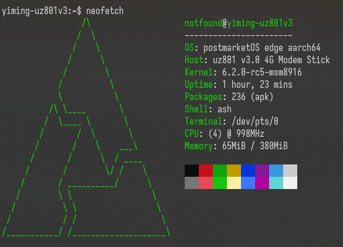

Zhihe series LTE dongles (generic-zhihe)
|
 ssh with neofetch | |
| Manufacturer | Generic |
|---|---|
| Name | Zhihe-series LTE dongles |
| Codename | generic-zhihe |
| Released | 2019-2022 |
| Category | testing |
| Original software | Android 4.3 |
| Hardware | |
| Chipset | Qualcomm Snapdragon 410 (MSM8916) |
| CPU | 4x 1.0 GHz Cortex-A53 |
| GPU | Adreno 305 |
| Display | none |
| Storage | 4GB(common)/8GB(rare) eMMC |
| Memory | 512MB |
| Architecture | aarch64 |
{kind=link}
| USB Networking |
Works
|
|---|---|
| Flashing |
Works
|
| Touchscreen |
Unavailable
|
| Display |
Unavailable
|
| WiFi |
Works
|
| FDE |
Unavailable
|
| Mainline |
Works
|
| Battery |
Unavailable
|
| 3D Acceleration | |
| Audio |
Unavailable
|
| Bluetooth | |
| Camera |
Unavailable
|
| GPS |
Works
|
| Mobile data |
Works
|
| SMS | |
| Calls | |
| USB OTG / USB-C Role switching |
Works
|
| NFC |
Unavailable
|
| Accelerometer |
Unavailable
|
|---|---|
| Magnetometer |
Unavailable
|
| Ambient Light |
Unavailable
|
| Proximity |
Unavailable
|
| Hall Effect |
Unavailable
|
| Barometer |
Unavailable
|
| Power Sensor |
Unavailable
|
| Camera Flash | |
|---|---|
| Keyboard |
Unavailable
|
| Touchpad |
Unavailable
|
| USB-A |
Unavailable
|
| HDMI/DP |
Unavailable
|
| Ir TX |
Unavailable
|
| Ir RX |
Unavailable
|
| Stylus |
Unavailable
|
| Haptics |
Unavailable
|
| Ethernet |
Unavailable
|
| FOSS bootloader |
Works
|
Contributors
- notfound405
Users owning this device
- Notfound405 (Notes: UZ801 v3.0 & UFI001C_MB_V01 & UFI003_MB_V02)
- TravMurav (Notes: uf896)
How to enter flash mode
$ adb reboot edl # Qualcomm EDL, or
$ adb reboot bootloader # fastboot.
Note: only applies to stock Android system.
UFI-001C and many more with xinxun brand
By default, we get only
shellpermission with
adb shell. However, you don't have to install SuperSU or Magisk for temporary root access. The following instruction is much easier for temporary root access(need to redo after reboot):
$ adb shell
$ # Now you are in adb
$ setprop service.adb.root 1; busybox killall adbd
$ # wait for a few seconds
$ adb shell
$ # Now you get the root permission!
UZ801 V3.0
adb interface is not enabled by default.
To enable adb access and root permission, plug this device into your PC and use browser to access this URL: http://192.168.100.1/usb_debug.html, and replug your device. You'll find an adb device and may try the intructions above.
See the section below if your device bricks.
Debug UART pin and test pins
UZ801 V3.0
{kind=link}
Note: 1.8 volt
UFI103S, UFI001C(B), UFI003 etc.
They are clearly labeled on the board, the only button is the EDL button.
Note: 3.3 volt
Preparation
It is recommended to backup the eMMC before flashing. Refer to EDL.
The original Android image contains too old firmware to boot mainline kernel, use firmwares from Dragon Board 410c as replacement. Also, you may need qhypstub as well as lk1st (lk2nd is not recommended).
$ wget https://releases.linaro.org/96boards/dragonboard410c/linaro/rescue/17.09/dragonboard410c_bootloader_emmc_android-88.zip
$ unzip dragonboard410c_bootloader_emmc_android-88.zip
$ # put your device into EDL mode or fastboot mode and flash sbl1(only uz801 is required) and tz with the corresponding files extracted.
$ # Note: Flashing other images such as rpm/sbl1 is not recommended anymore. It is causing problem for some models.
For qhypstub and lk1st:
$ git clone https://github.com/msm8916-mainline/qhypstub.git
$ cd qhypstub; git clone https://github.com/msm8916-mainline/qtestsign.git
$ make CROSS_COMPILE=aarch64-linux-gnu-
$ # get the generated qhypstub-test-signed.mbn and store it somewhere
$
$ cd ..; git clone https://github.com/msm8916-mainline/lk2nd.git
$ cd lk2nd; make LK1ST_DTB=msm8916-512mb-mtp LK1ST_COMPATIBLE=zhihe,uz801-v3 TOOLCHAIN_PREFIX=arm-none-eabi- msm8916-lk1st
$ # The instructions here assumes Ubuntu as the host OS and UZ801 as the device.
$ # You also need to install some packages with apt.
$ # Refer to the README.md of the repository for detailed instructions.
$ ../qhypstub/qtestsign/qtestsign.py aboot build-lk1st-msm8916/emmc_appsboot.mbn
$ # get build-lk1st-msm8916/emmc_appsboot-test-signed.mbn and store it somewhere
$
$ # Now flash them to hyp(bak) and aboot(abootbak) partitions with EDL or fastboot.
Installation
See Qualcomm_Snapdragon_410/412_(MSM8916)#Installation.
partition usage strategy
There are several strategies to make full use of the limited eMMC storage. They are listed below, feel free to add more.
Some common recommendations
- use btrfs for rootfs
$ pmbootstrap install --filesystem btrfs
- reduce the size of /boot partition to 128 MB or even smaller (64MB should be enough to boot, but a slightly larger size is recommended)
$ pmbootstrap config boot_size 128
Examples
- Flash the rootfs and /boot to system partition (not recommended)
$ pmbootstrap flasher flash_rootfs
- The volume of system partiton is too low to hold a rootfs. It works, but the free space is very low, making it painful to use.
- Flash the rootfs and /boot to userdata partition (the easiest)
$ pmbootstrap flasher flash_rootfs --partition userdata
- This one is the easiest, and the volume of userdata partition should be sufficient for common uses. The drawback is that a large amount of storage space is not used.
- split /boot and rootfs, and flash them to different partitions.
$ pmbootstrap install --split $ pmbootstrap export $ cd /tmp/postmarketOS-export/ $ img2simg *-root.img root.simg $ # Put your device into fastboot mode $ fastboot flash cache *-boot.img $ fastboot flash system root.simg # or userdata
- The operation is a bit complex, but you can make use of 2 different partitions, which reduces space wasting. It is recommended to flash /boot partition to cache partition and flash rootfs to system or userdata.
- Drawback: not officially supported.
- Note: you may mount the other partition (usually system or userdata, if you flash /boot to cache partition) to, e.g. /var/lib/docker with /etc/fstab and localmount, so that every large partitions can be used.
- repartition
- There are two major choices, one is to replace the entire partition table and use your custom one, the other is to do minor modification with gptfdisk, leaving most partitions untouched.
- replace the entire partition table
- You can do it with (s)gdisk in linux,
fastboot flash partitionin fastboot or edl tool in Qualcomm EDL mode. - No technical support here. It's dangerous and may brick your device, think twice before proceeding and be prepared to recovery your device in Qualcomm EDL mode.
- You can do it with (s)gdisk in linux,
- gptfdisk
- This method is much safer than the previous one and probably will at least let the device boot to fastboot mode if you did something wrong. Generally, the easiest solution would be combining system and userdata together. You can do it with gdisk, sgdisk or any tools you like. Just delete all partitions after system and extend system to maximum.
- This method is much safer than the previous one and probably will at least let the device boot to fastboot mode if you did something wrong. Generally, the easiest solution would be combining system and userdata together. You can do it with gdisk, sgdisk or any tools you like. Just delete all partitions after system and extend system to maximum.
Note: persist partition sits between system and userdata, and unfortunally WCNSS nv items file is stored in it, which need to be loaded during runtime for functionality of WCN36xx(WiFi). You have to backup and relocate persist partition before deleting it, or if you like, extract WCNSS_qcom_nv_items.bin and place it at /lib/firmware.
See also
- pmaports!3988 Initial merge request
- Device package
- Kernel package